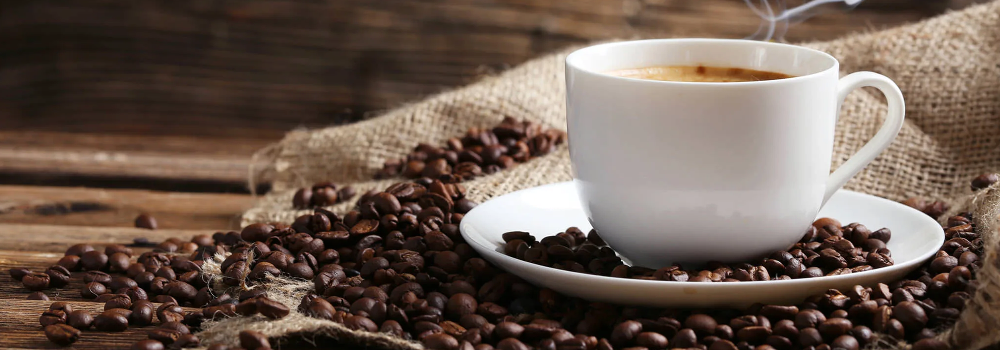

Bebidas

- - Café negro (americano, espresso, ristretto, lungo)
- - Café con leche (latte, cappuccino, flat white, macchiato)
- - Café especial (mocha, affogato, vienés)
- - Té (negro, verde, rojo, blanco, chai)
- - Chocolate caliente (clásico, con especias, con malvaviscos)
- - Mate cocido (muy popular en Argentina)
- - Leche dorada (cúrcuma, jengibre y especias)
- - Café turco (intenso y especiado, preparado en un cezve)
- - Café bombón (espresso con leche condensada)
- - Carajillo (café con licor, muy popular en España)
- - Té matcha tradicional (sin leche, batido con agua caliente)
- - Chocolate caliente mexicano (con canela y un toque de chile)
- -Café frío (cold brew, iced coffee, frappé)
- -Té helado (negro, verde, chai, frutal)
- -Infusiones frías (hibisco, menta, frutos rojos)
- -Limonada (tradicional, con menta, con frutos rojos)
- -Batidos (banana, chocolate, frutas mixtas)
- -Smoothies (mango, fresa, frutos del bosque)
- -Leche malteada (vainilla, chocolate, fresa)
- -Matcha frío (matcha latte helado, frappé de matcha)
- -Chocolate frío (clásico, con especias, con malvaviscos)
- -Milkshake (oreo, caramelo, café)
- -Café tonic (cold brew con agua tónica, refrescante y cítrico)
- -Té boba (té con leche y perlas de tapioca)
- -Yerba mate fría (tereré, con jugo de cítricos o hierbas)
- -Infusión fría de jengibre y limón (refrescante y saludable)
- -Milk tea frío (té negro con leche y azúcar)
- -Soda italiana (agua con gas y jarabe de frutas)